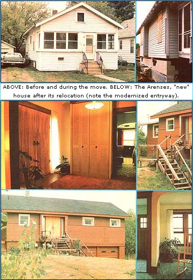
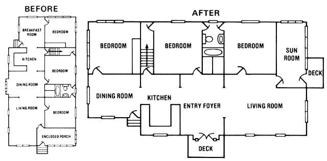

"You bought a house for $50!"
That's right. In the spring of 1976 my husband and I purchased the three-bedroom, 1,200-square-foot older home you see here (with the kind of fine hardwood floors and mellow oak woodwork you just can't find anymore) for the grand price of $50. And that house has since been appraised at $23,000!
Of course, there was a catch to the deal: Before we could move into the residence . . . we had to agree to move it away from the spot where we'd bought it.
Still, that wasn't such a bad bargain. Our total moving costs came to $2,800 . . . and we spent an additional $3,000 on remodeling the home and adding a two-car garage in the basement. In other words, for about the same amount of money we'd have had to come up with for a down payment on an equivalent modern house . . . we've been able to buy our present home-the one you see here-outright!
And we don't-by any means-consider ours to be a one-of-a-kind, it'll-never-happen-again situation. In fact, we feel confident-given a little time, patience, and operating capital-that you, too, can find a move-it-yourself dwelling to fit your needs. You may even be able to locate, buy, relocate, and move into such a structure for less than we did, if you can find a place that doesn't require much remodeling.
Finding an inexpensive house to move was the easiest part of the whole job for us . . . and it should be for you, too. Newspapers often carry stories about businesses or institutions that are planning expansions or new construction. Once you learn about such a project, drive by the proposed building site and note whether any homes are standing there . . . or call the contractors and ask if any dwellings near (or on) the site have been condemned. In almost all cases, it's cheaper for the folks who're planning the construction to let you haul away a condemned building than it is for them to have the structure torn down.
Our house is a good example. When we first came across it, the dwelling was slated to be razed to make room for an addition to a hospital. We were able to buy the structure for next to nothing ($50) because we saved the hospital administrators the expense of tearing the residence down.
Another good way to find one of these potential "mobile homes" is by scanning the classified section of your local paper. Occasionally, private owners will advertise a home that must be moved. Also, houses that are bought by the state to make way for future highway expansion (or other projects) are sometimes advertised in the paper and sold to individuals by sealed bid.
Then too, firms that specialize in house moving often list dwellings that they've moved (or will move soon). We don't recommend that you buy a home from such an outfit, however, since the moving company stands to make a hefty profit not only on the house itself but on its moving expenses too.
Some places you can reject immediately. We began by looking at a gigantic, three-story home, for instance . . . but quickly discovered that moving the mini-mansion would entail slicing through (and then resplicing) a major trunk line of the telephone company across the street, at an estimated cost of $10,000!
Ultimately, we had to rule out all buildings more than 18 feet high because of the exorbitant cost of cutting and splicing phone, power, and traffic-signal lines along our proposed moving route. (Here in Michigan, utility companies are required to run all lines at a height of 18 feet or more above the ground . . . however, this regulation may be different-or even nonexistent-in your state. Check it out.)
We also had to rule out brick or stone residences. Highway load limits prohibit movers from transporting such structures on state highways in many parts of the country. As a result, some firms require that all the bricks (and/or stones) be removed from the edifice before they'll haul your purchase even one block. So don't get your heart set on that lovely old lodge with the fieldstone chimney. Unless you're skilled in masonry, the costs involved in taking apart and rebuilding the stonework could cause your already deflated pocketbook to collapse entirely!
One more thing: When scouting out a movable house, beware of any additions that may have been made to the original structure. The only damage that our place suffered in transit happened in the wall that separates the kitchen from a two-room add-on . . . an addition that (as fate would have it) had been built on an uneven foundation. As a result, cracks suddenly appeared all along the kitchen wall when we set the residence on its new-and level-base.
With the above requirements in mind, Richard and I looked at-and rejected-dozens of residences before finding the one we finally purchased. Our "dream house" turned out to be a one-story wood-frame bungalow situated on a narrow city lot. Its interior was somewhat typical of an older home: The living room, dining room, kitchen, and breakfast area were lined up on one side of the abode . . . while three bedrooms plus an enclosed porch ran down the other. The furnace was fairly new, the construction was sound, and we did have some ideas about how to modernize the floor plan. So we went ahead.
The next step was to find a suitable neighborhood for our future dwelling. To our dismay, we soon learned that many subdivisions have prohibitions against bringing in houses that have been built somewhere else. Other areas-by virtue of "covenants" contained in the deeds to the land-had sometimes-restrictive rules about the minimum number of square feet any house in the area could have. We were limited, too, in our search for a lot by the sheer cost of transporting our building: The mover we used (the least expensive one we could find) wanted to charge us $1,000 just to lift the house off its foundation . . . and $1,000 for each mile it was then moved!
After weeks of searching, we finally found a spacious lot that we could afford in an older (but well-kept) neighborhood. The mandatory water and sewer hookups weren't too expensive (which was a definite plus, given the state of our finances), and-wonder of wonders-the piece of property came with beautiful old gnarled apple trees and raspberry bushes everywhere! (We knew when we saw the apple trees that that was our future homesite.)
Next, we steeled ourselves for the confrontation with City Hall. (A "confrontation", unfortunately, is just what you can expect, too. Most building inspectors consider do-it-yourselfers the bane of their existence. Be prepared for a hassle.) Permits are required for every step in moving a house and locating it on a new site. Happily, we were successful in securing a special "homeowner's permit", which allowed us to complete plumbing and electrical work (and hook up the sewer line) ourselves . . . thus saving us the expense of having to "contract out" those chores.
Meanwhile, back at the "estate" (the vacant lot we'd decided to buy), we staked out the perimeters of our home's new foundation. Then we called in an excavator and notified the mover that we were ready to begin.
The idea of transporting an entire house from one location to another fascinated me, and I was anxious to see exactly how it was done. Here-briefly-is what happened:
On the appointed morning, half a dozen workmen arrived at the home's old address and-before starting-knocked about four concrete blocks out of the foundation walls at either end of the rectangular house. Through the holes thus created, the workmen passed two 50'-long I-beams the length of the building. Next, the men placed four jacks (one at each corner of the house) under the ends of the beams. Then they raised the whole affair high enough off the ground to slide two short I-beams underneath and at right angles to the first set of girders. (At this point, the steel underpinnings resembled a giant tic-tac-toe board.)
Next, a winch was used to slowly pull the house off its foundation, after which the work crew attached wheels to each end of the long I-beams. Presto-chango! We were ready to roll!
Once the movers had trundled the building to its new location, they positioned the house over the excavated area that was to become its basement. Then they set the ends of the long I-beams down on four pillars we'd made by stacking pairs of 8" X 8" timbers crosswise. All that remained for us to do was construct the basement walls, remove the wooden pillars, and (with the aid of jacks) gently lower the home onto its new foundation Oust like lowering a car to the ground after you've changed a tire)!
During the course of the summer, we set about our task as a husband-wife team. Richard dug the footings for the foundation . . . I leveled the concrete with a two-by-four. He put in the sewer line . . . I painted the house's exterior. And we both learned to lay block as we erected the basement's walls (with the house hovering rather precariously overhead).
That summer, by the way, we learned one trick that helped us quite a bit and which-we think-could probably benefit you, too: Namely, hire a pro to teach you how to do something you've never attempted before. We found a bricklayer, for instance, who was willing to work part time with us (on an hourly basis) to construct our home's foundation. As a result, we learned firsthand how to build walls that are level and plumb across their entire 50-foot length . . . how to cut concrete blocks to fit around basement windows ... and the secret of finishing off a concrete-block wall with those even grooves of mortar between each row (instead of the big, projecting globs you get when you lay one block atop another).
Incidentally, getting an expert to help you is frequently the least expensive way to accomplish a task, too . . . as we learned the hard way when Richard rented a backhoe to fill in around the foundation and do some rough grading. Sad to say, it took him nearly the whole day just to learn how to become proficient enough with the backhoe's controls to avoid swinging its shovel through our newly built basement walls as he worked close to the building. Later, we found a construction worker with his own backhoe and tractor who agreed to do the work for only a little more than it had cost us to rent the first machine for a day . . . and he did the job in five hours.
To improve our home's floor plan, we had had our new residence placed sideways (that is: kitchen, dining room, and living room facing the front lawn) on the lot . . . which meant that by replacing the dining room's bay window with double doors, we could convert the centrally located room into an entry foyer (see "before and after" floor plan drawings). And that's exactly what we did. Consequently, we can now go directly to the living room (on the right) or the kitchen (on the left) when we come in the front door, rather than plodding through each room to reach the next.
Thanks also to the way we positioned our house on its new lot, our bedrooms now comprise the back of the house instead of being lined up along one side of the building. Also, the large windows that line the two walls of the former "enclosed porch" (see drawings) currently enclose a cheery sunroom/greenhouse just off the living room. And the outside door to this room (which was once the house's front door) opens out onto a small deck.
Before I conclude, here are a few tips that I wish we'd had before we began:
[1] Have the building inspector from the area you're moving to inspect the soon-to-be-transported dwelling at its present location before you buy it. He can tell you whether your prospective purchase meets the code(s) for his area and what structural changes (if any) will be required before he can issue an occupancy permit. With an older house, you may have to completely redo the wiring or plumbing.
[2] Remember that you can always find another house. Don't settle for one that needs a lot of work.
[3] Obtain bids from several moving firms. We received estimates ranging from $3,500 to $6,000 to transport one home that we considered buying (but didn't purchase).
[4] If you're buying a lot with the intention of moving a house onto it, by all means make the offer to purchase subject to your being able to secure all the necessary permits to move the dwelling of your choice to the property.
[5] Try not to lock yourself into any kind of tight schedule where you must take occupancy by a certain date. Sit down and calculate the amount of time the whole project will consume from start to finish . . . then double it! If you try to rush things, the inevitable delays will be terribly frustrating. Our house, for example, was stuck in some mud at the edge of our lot for nearly a week due to unusually heavy rain. We spent days, too, tracking down a faulty circuit in the home's outmoded electrical system. And the building inspector returned time after time to ask us to fix "just one more small detail" before he finally issued that all-important occupancy permit.
All told, we worked on our place nearly five months from the day the dwelling was moved until the day it was ready to live in. Was it worth the time, the trouble, and (most important of all) the money? You bet! There's no telling how many thousands of dollars a place like ours would cost to build from scratch nowadays (although-as I mentioned earlier-one bank placed a $23,000 value on the building two years ago) . . . and anyway, some of the home's features-such as the real plaster walls and the extra-wide oak woodwork-just can't be duplicated by today's breed of "slap it together" homebuilders.
The thing I like best, though, about our $50 "dream house" is the happy feeling I get whenever I start to add up all the monthly mortgage payments and interest charges we haven't had to pay ( and never will have to pay ) over the years, thanks to the fact that we own our "little castle" free and clear.
Let's see now: $23,000 . . . financed over 30 years . . . at 9-1/2% interest . . . hmmmm . . . that comes to . . . .
|
 |
 |
|